library(tidyverse)
library(janitor)Olivia’s Analysis
Goals of this notebook
Answer these questions:
- What do these numbers show us about what kinds of crimes are being committed? (Arrange descending order types of charges)
- Who is being arrested? (Gender, ethnicity, age)
- Who is doing the arresting? (County, Officers (or ID))
- How many are drug crimes? (Filter charge by drug crimes to see how many and what type, arrange descending to see most common; Filter to grouping same charges under different names)
- What kind of drugs? Is it fentanyl like Abbott says?
Let’s get into it.
Setup
Importing cleaned data
olsdata <- read_rds("data-processed/02-combine.rds")
olsdata# A tibble: 58,635 × 25
primary_key charge charge_count ethnicity charge_date person_age
<chr> <chr> <dbl> <chr> <date> <dbl>
1 TX20234 Poss Marij < 2OZ 1 H 2023-01-03 27
2 TX20234 Poss CS PG 2 >= 1G… 1 H 2023-01-03 27
3 TX20235 WARRANT: ASSAULTIV… 1 H 2023-01-21 50
4 TX20237 Criminal Trespass 1 H 2023-01-22 37
5 TX20238 Criminal Trespass 1 H 2023-01-22 NA
6 TX20239 Criminal Trespass 1 H 2023-01-22 26
7 TX202310 Criminal Trespass 1 H 2023-01-22 21
8 TX202311 Criminal Trespass 1 H 2023-01-22 NA
9 TX202312 Criminal Trespass 1 H 2023-01-22 29
10 TX202313 Criminal Trespass 1 H 2023-01-22 NA
# ℹ 58,625 more rows
# ℹ 19 more variables: person_first_name <chr>, person_second_name <chr>,
# person_third_name <chr>, person_last_name <chr>, officer_id <dbl>,
# arrest_county <chr>, code <chr>, severity_code <chr>,
# severity_code_clean <chr>, person_race_abbr <chr>,
# person_gender_abbr <chr>, arrest_state <chr>, arrest_division <chr>,
# arrest_id <dbl>, arrest_urn <chr>, arresting_officer <chr>, …What do these numbers show us about what kinds of crimes are being committed?
Let’s arrange types of charges in descending order.
olscrimes <- olsdata |>
group_by(charge) |>
summarise(appearances = n()) |>
arrange(desc(appearances))
olscrimes# A tibble: 490 × 2
charge appearances
<chr> <int>
1 Criminal Trespass - Disaster Area 6869
2 Possession Of Marihuana <2oz 5743
3 Smuggling Of Persons 5259
4 Criminal Trespass 2669
5 Poss Marij < 2OZ 2661
6 Evading Arrest Detention W/Veh 1592
7 Possession Of Substance In Penalty Group 2 < 1g 1465
8 Smuggling Of Persons: For Pecuniary Benefit 1272
9 Criminal Trespass Arrests 1247
10 Smuggling of Persons 1110
# ℹ 480 more rowsWho is being arrested?
Let’s group by gender, ethnicity, race, and age.
Gender:
olsgender <- olsdata |>
group_by(person_gender_abbr) |>
summarise(appearances = n()) |>
arrange(desc(appearances))
olsgender# A tibble: 4 × 2
person_gender_abbr appearances
<chr> <int>
1 M 48297
2 F 10147
3 <NA> 180
4 U 11ggplot(olsgender, aes(x = reorder(person_gender_abbr, appearances), y = appearances)) +
geom_col(stat = "identity") +
coord_flip() +
labs(
title = "Operation Lonestar arrests by sex",
subtitle = str_wrap("Operation Lonestar is a program launched by Texas Governor Greg Abbott to increase safety at the southern border of the state. Arrest data from the program shows that the number of males arrested is much higher than the number of females since the programs' inception in 2021."),
caption = "By Olivia Dilley",
x = "Sex of arrested individual",
y = "Number of arrests"
)Warning in geom_col(stat = "identity"): Ignoring unknown parameters: `stat`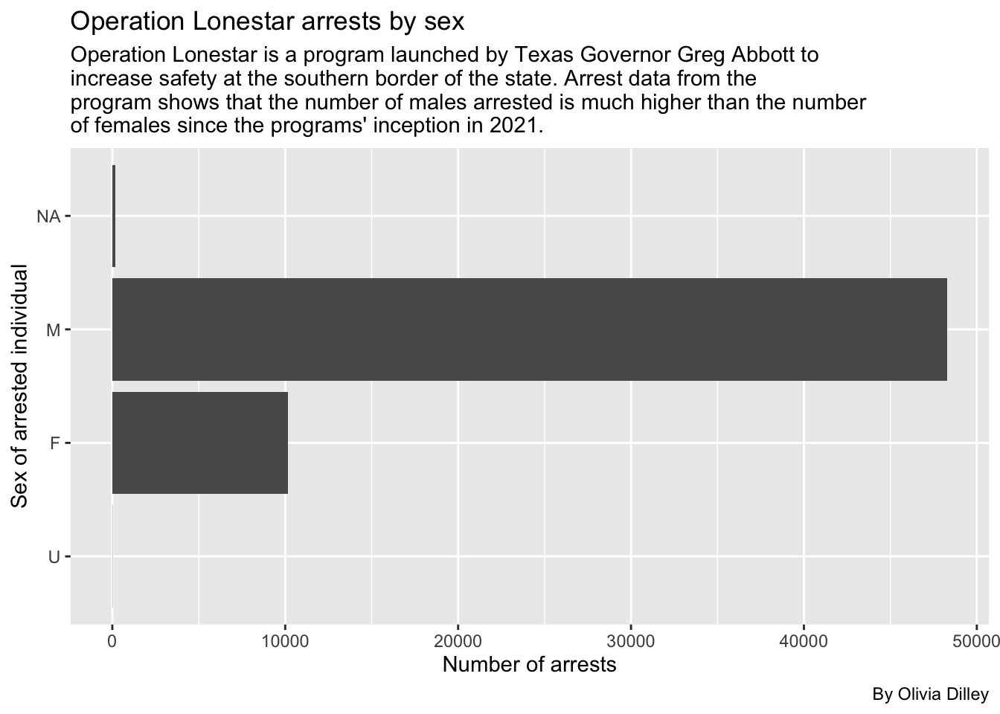
** NOTE TO SELF: Why is the reorder not working properly? **
Ethnicity:
olsethnicity <- olsdata |>
group_by(ethnicity) |>
summarise(appearances = n()) |>
arrange(desc(appearances))
olsethnicity# A tibble: 4 × 2
ethnicity appearances
<chr> <int>
1 <NA> 41379
2 H 14302
3 N 2811
4 U 143ggplot(olsethnicity, aes(x = reorder(ethnicity, appearances), y = appearances)) +
geom_bar(stat = "identity") +
coord_flip() +
labs(
title = "Operation Lone Star arrests by ethnicity",
subtitle = str_wrap("Arrest data from Operation Lone Star shows that the number of Hispanics arrested is much higher than the number of non-Hispanics since the programs' inception in 2021. Notable is the large number in the N/A category, which calls into question the practices used when recording data."),
caption = "By Olivia Dilley",
x = "Ethnicity of arrested individual",
y = "Number of arrests"
)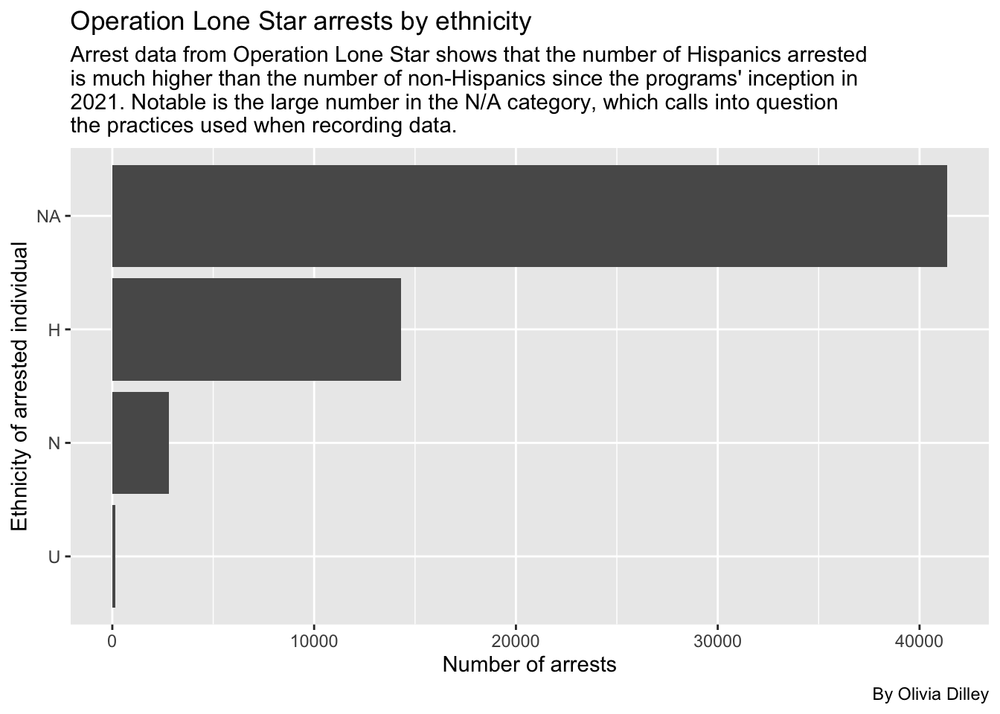
Age:
olsage <- olsdata |>
group_by(person_age) |>
summarise(appearances = n()) |>
arrange(desc(appearances)) |>
head(15)
olsage# A tibble: 15 × 2
person_age appearances
<dbl> <int>
1 NA 6119
2 22 2462
3 20 2457
4 21 2378
5 24 2354
6 23 2341
7 19 2321
8 25 2206
9 26 2069
10 27 2014
11 28 1985
12 30 1945
13 29 1924
14 18 1904
15 31 1811ggplot(olsage, aes(x = reorder(person_age, appearances), y = appearances)) +
geom_bar(stat = "identity") +
coord_flip() +
labs(
title = "Operation Lonestar arrests by age",
subtitle = str_wrap("Operation Lonestar arrest data shows younger people are more susceptible to being arrested for crimes falling under Operation Lonestar. Notable is the large number in the N/A category, which calls into question the practices used when recording data."),
caption = "By Olivia Dilley",
x = "Age of arrested individual",
y = "Number of arrests"
)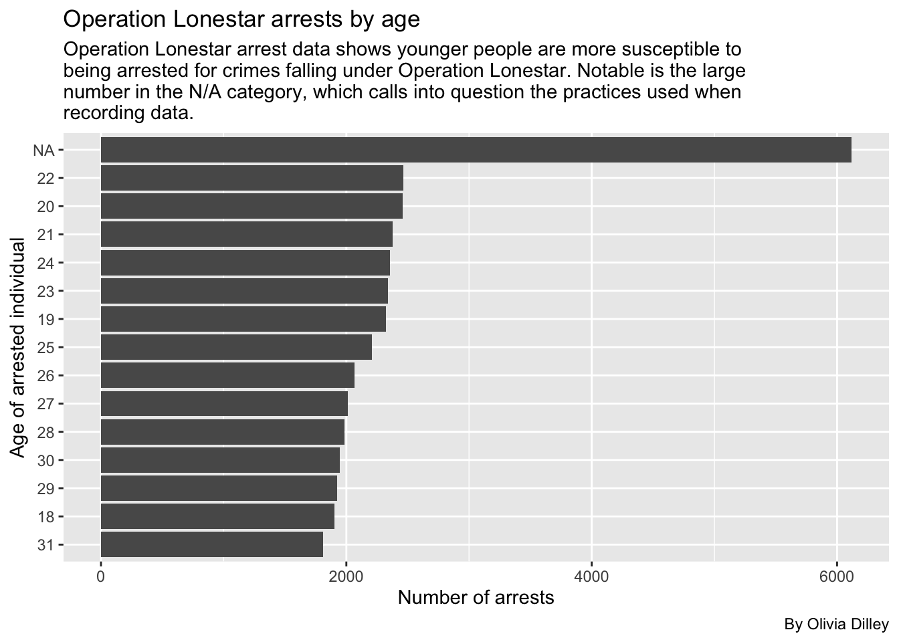
** NOTE TO SELF: This chart only shows the first 20 options. Also, do we want to include NA in all of these charts? **
All together:
olsarrestees <- olsdata |>
group_by(person_age, person_gender_abbr, ethnicity, person_race_abbr) |>
summarise(appearances = n()) |>
arrange(desc(appearances))`summarise()` has grouped output by 'person_age', 'person_gender_abbr',
'ethnicity'. You can override using the `.groups` argument.olsarrestees# A tibble: 930 × 5
# Groups: person_age, person_gender_abbr, ethnicity [460]
person_age person_gender_abbr ethnicity person_race_abbr appearances
<dbl> <chr> <chr> <chr> <int>
1 NA M H H 3707
2 19 M <NA> H 1343
3 21 M <NA> H 1282
4 20 M <NA> H 1264
5 22 M <NA> H 1246
6 23 M <NA> H 1212
7 24 M <NA> H 1212
8 18 M <NA> H 1206
9 25 M <NA> H 1117
10 26 M <NA> H 1043
# ℹ 920 more rowsWho is doing the arresting and where?
Let’s look at county, officers, and officer ID.
Officers, ID, County:
olsofficers <- olsdata |>
group_by(arresting_officer, officer_id, arrest_county) |>
summarise(appearances = n()) |>
arrange(desc(appearances))`summarise()` has grouped output by 'arresting_officer', 'officer_id'. You can
override using the `.groups` argument.olsofficers# A tibble: 7,500 × 4
# Groups: arresting_officer, officer_id [3,159]
arresting_officer officer_id arrest_county appearances
<chr> <dbl> <chr> <int>
1 <NA> 15952 Maverick 392
2 <NA> 15532 Maverick 339
3 <NA> 15834 Maverick 287
4 Derrick Hinojosa NA Cameron 278
5 <NA> 11522 Maverick 259
6 Jose Mendoza NA Cameron 233
7 <NA> 13362 Maverick 218
8 <NA> 11689 Maverick 216
9 Jose Delafuente NA Cameron 213
10 David Poland NA Nueces 210
# ℹ 7,490 more rows** NOTE TO SELF: Should I make a visualization for this since we have the names of some others and some not, and they could be the same person? **
Creating categories for charges
cat_ols <- olsdata |>
mutate(
charge_cat = case_when(
str_detect(
charge,
"Drug|CS|Cs|Mari|DRUG|MARI|Marj|MARJ|Man|Subs|Stash|Chem"
) ~ "Drug",
str_detect(
charge,
"Smugg|SMUGG|Trafficking|TRAFFICKING|Trans|Bringing In"
) ~ "Smuggling/Trafficking of Persons",
str_detect(charge, "Firearm|FIREARM|gun|GUN|Amm|Arm|Weapon|WEAPON") ~ "Weapon",
str_detect(charge, "Launder|LAUNDER") ~ "Money Laundering",
str_detect(charge, "Trespass|TRESPASS") ~ "Trespassing",
str_detect(charge, "Alien|ALIEN|Visa|VISA|IMMIGRATION|Immigration") ~ "Immigration Other",
str_detect(charge, "Evad|EVAD|Flee|FLEE") ~ "Evasion/Fleeing",
str_detect(charge, "Organized|Enterprise") ~ "Organized Crime",
str_detect(charge, "Tamp|TAMP") ~ "Tampering",
str_detect(charge, "Unauth") ~ "Unauthorized Use of Vehicle",
str_detect(charge, "Warrant|WARRANT") ~ "Warrant",
str_detect(charge, "Conspiracy|CONSPIRACY") ~ "Conspiracy"
),
default. = NA
)
cat_ols |>
count(charge_cat, charge)# A tibble: 490 × 3
charge_cat charge n
<chr> <chr> <int>
1 Conspiracy Attempt And Conspiracy 7
2 Conspiracy Attempt And Conspiracy (21 Usc Sec 963) 1
3 Conspiracy Attempt And Conspiracy (Other Title 21 Violations) 4
4 Conspiracy Conspiracy (General/Other Title 21) 10
5 Drug (FENTANYL) POSS CS PG 1 <1G 1
6 Drug (HEROIN) POSS CS PG 1 <1G 1
7 Drug Conspiracy To Possess With Intent To Distribute Controlled … 201
8 Drug Conspiracy To Sale/Manfct/Dist Controlled Substance 122
9 Drug Controlled Substance Offenses-Felony 110
10 Drug Controlled Substance Offenses-Misdemeanor 11
# ℹ 480 more rowsAnalyzing charges by category
cat_chart <- cat_ols |>
group_by(charge_cat) |>
summarise(charge_num = n()) |>
arrange(desc(charge_num))
cat_chart# A tibble: 13 × 2
charge_cat charge_num
<chr> <int>
1 Drug 23233
2 Trespassing 11439
3 Smuggling/Trafficking of Persons 10965
4 Evasion/Fleeing 4619
5 Warrant 4158
6 Weapon 1967
7 Unauthorized Use of Vehicle 853
8 Tampering 698
9 Organized Crime 342
10 Money Laundering 182
11 Immigration Other 152
12 Conspiracy 22
13 <NA> 5Breaking down the Smuggling charge category
Lauren has a theory that Black people in areas like Houston are being tricked into smuggling people across the border. We want to look at the smuggling category and break down how many offenses are from Black people and where those offenses took place so we can test that theory.
First we’ll look at the smuggling charges for all races and tally them to see who is getting arrested for smuggling the most.
cat_ols |>
group_by(person_race_abbr, charge_cat) |>
filter(charge_cat == "Smuggling/Trafficking of Persons") |>
summarise(appearances = n()) |>
arrange(desc(appearances))`summarise()` has grouped output by 'person_race_abbr'. You can override using
the `.groups` argument.# A tibble: 6 × 3
# Groups: person_race_abbr [6]
person_race_abbr charge_cat appearances
<chr> <chr> <int>
1 H Smuggling/Trafficking of Persons 8178
2 W Smuggling/Trafficking of Persons 1416
3 B Smuggling/Trafficking of Persons 1184
4 <NA> Smuggling/Trafficking of Persons 173
5 A Smuggling/Trafficking of Persons 12
6 U Smuggling/Trafficking of Persons 2Lauren thinks this number of Black smuggling offenses is still substantial for Texas’ population demographics, despite it only being 3rd highest behind Hispanic and White.
Smuggling by county and race
Let’s look at all races smuggling charges by county to see how many smuggling charges there are for each race in each specific county.
smuggle_ols <- cat_ols |>
group_by(person_race_abbr, charge_cat, arrest_county) |>
summarise(appearances = n()) |>
arrange(desc(appearances)) |>
filter(charge_cat == "Smuggling/Trafficking of Persons") |>
select(!charge_cat)`summarise()` has grouped output by 'person_race_abbr', 'charge_cat'. You can
override using the `.groups` argument.
Adding missing grouping variables: `charge_cat`smuggle_ols# A tibble: 163 × 4
# Groups: person_race_abbr, charge_cat [6]
charge_cat person_race_abbr arrest_county appearances
<chr> <chr> <chr> <int>
1 Smuggling/Trafficking of Persons H Kinney 1347
2 Smuggling/Trafficking of Persons H El Paso 1230
3 Smuggling/Trafficking of Persons H Hidalgo 884
4 Smuggling/Trafficking of Persons H Webb 555
5 Smuggling/Trafficking of Persons H Val Verde 492
6 Smuggling/Trafficking of Persons H Uvalde 486
7 Smuggling/Trafficking of Persons H Maverick 475
8 Smuggling/Trafficking of Persons B Kinney 448
9 Smuggling/Trafficking of Persons H Zavala 399
10 Smuggling/Trafficking of Persons W Kinney 305
# ℹ 153 more rowsThe most common is Hispanic people smuggling in areas near the border, like Kinney and El Paso county. Black smuggling in Kinney is also in the top 10.
Breaking down offenders’ charges by races
We’ll start with Black arrestees
blackarrests <- cat_ols |>
group_by(person_race_abbr, charge_cat) |>
filter(person_race_abbr == "B") |>
summarise(appearances = n()) |>
arrange(desc(appearances))`summarise()` has grouped output by 'person_race_abbr'. You can override using
the `.groups` argument.blackarrests# A tibble: 11 × 3
# Groups: person_race_abbr [1]
person_race_abbr charge_cat appearances
<chr> <chr> <int>
1 B Drug 1898
2 B Smuggling/Trafficking of Persons 1184
3 B Warrant 339
4 B Weapon 300
5 B Evasion/Fleeing 249
6 B Unauthorized Use of Vehicle 100
7 B Trespassing 41
8 B Tampering 34
9 B Organized Crime 31
10 B Money Laundering 10
11 B Conspiracy 1So Black people are most commonly getting arrested under OLS for drugs, then smuggling. Let’s make this a graph.
ggplot(blackarrests, aes(x = reorder(charge_cat, appearances), y = appearances)) +
geom_bar(stat = "identity") +
coord_flip() +
labs(
title = "Charge types for Black arrestees",
subtitle = str_wrap("Operation Lonestar arrest data shows Black people are being arrested mostly for drug and smuggling related charges."),
caption = "By Olivia Dilley",
x = "",
y = "Number of arrests"
)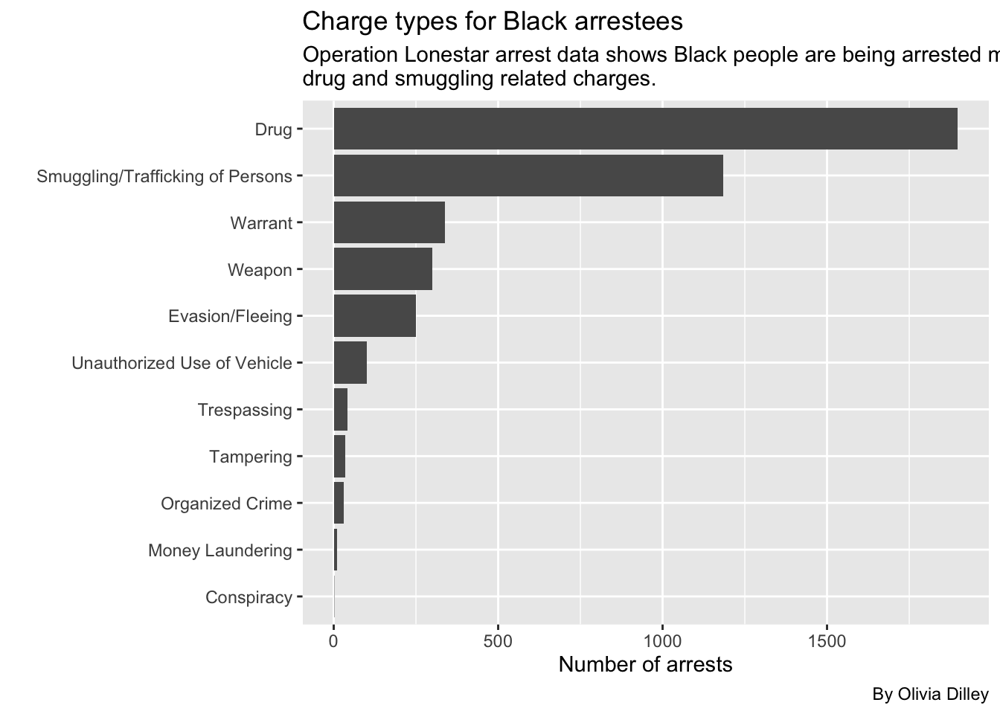
Now White arrests
whitearrests <- cat_ols |>
group_by(person_race_abbr, charge_cat) |>
filter(person_race_abbr == "W") |>
summarise(appearances = n()) |>
arrange(desc(appearances))`summarise()` has grouped output by 'person_race_abbr'. You can override using
the `.groups` argument.whitearrests# A tibble: 12 × 3
# Groups: person_race_abbr [1]
person_race_abbr charge_cat appearances
<chr> <chr> <int>
1 W Drug 5045
2 W Smuggling/Trafficking of Persons 1416
3 W Warrant 786
4 W Evasion/Fleeing 492
5 W Weapon 450
6 W Trespassing 242
7 W Unauthorized Use of Vehicle 142
8 W Tampering 127
9 W Organized Crime 70
10 W Money Laundering 41
11 W Immigration Other 6
12 W Conspiracy 5ggplot(whitearrests, aes(x = reorder(charge_cat, appearances), y = appearances)) +
geom_bar(stat = "identity") +
coord_flip() +
labs(
title = "Charge types for white arrestees",
subtitle = str_wrap("Operation Lonestar arrest data shows white people are being arrested mostly for drug and smuggling related charges."),
caption = "By Olivia Dilley",
x = "",
y = "Number of arrests"
)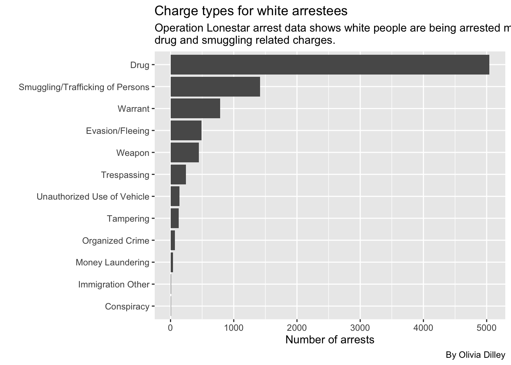
Now Hispanic arrests
hispanicarrests <- cat_ols |>
group_by(person_race_abbr, charge_cat) |>
filter(person_race_abbr == "H") |>
summarise(appearances = n()) |>
arrange(desc(appearances))`summarise()` has grouped output by 'person_race_abbr'. You can override using
the `.groups` argument.hispanicarrests# A tibble: 13 × 3
# Groups: person_race_abbr [1]
person_race_abbr charge_cat appearances
<chr> <chr> <int>
1 H Drug 15803
2 H Trespassing 11033
3 H Smuggling/Trafficking of Persons 8178
4 H Evasion/Fleeing 3814
5 H Warrant 2988
6 H Weapon 1174
7 H Unauthorized Use of Vehicle 599
8 H Tampering 530
9 H Organized Crime 215
10 H Money Laundering 126
11 H Immigration Other 123
12 H Conspiracy 14
13 H <NA> 5ggplot(hispanicarrests, aes(x = reorder(charge_cat, appearances), y = appearances)) +
geom_bar(stat = "identity") +
coord_flip() +
labs(
title = "Charge types for Hispanic arrestees",
subtitle = str_wrap("Operation Lonestar arrest data shows Hispanic people are being arrested mostly for drug and smuggling related charges."),
caption = "By Olivia Dilley",
x = "",
y = "Number of arrests"
)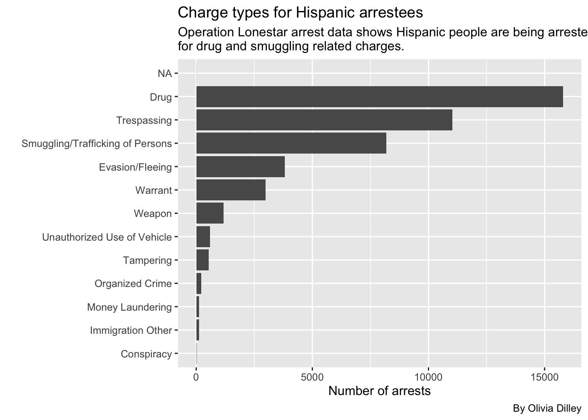
Now Asian arrests
asianarrests <- cat_ols |>
group_by(person_race_abbr, charge_cat) |>
filter(person_race_abbr == "A") |>
summarise(appearances = n()) |>
arrange(desc(appearances))`summarise()` has grouped output by 'person_race_abbr'. You can override using
the `.groups` argument.asianarrests# A tibble: 6 × 3
# Groups: person_race_abbr [1]
person_race_abbr charge_cat appearances
<chr> <chr> <int>
1 A Drug 56
2 A Smuggling/Trafficking of Persons 12
3 A Evasion/Fleeing 9
4 A Trespassing 9
5 A Warrant 7
6 A Weapon 5ggplot(asianarrests, aes(x = reorder(charge_cat, appearances), y = appearances)) +
geom_bar(stat = "identity") +
coord_flip() +
labs(
title = "Charge types for Asian arrestees",
subtitle = str_wrap("Operation Lonestar arrest data shows Asian people are being arrested mostly for drug and smuggling related charges."),
caption = "By Olivia Dilley",
x = "",
y = "Number of arrests"
)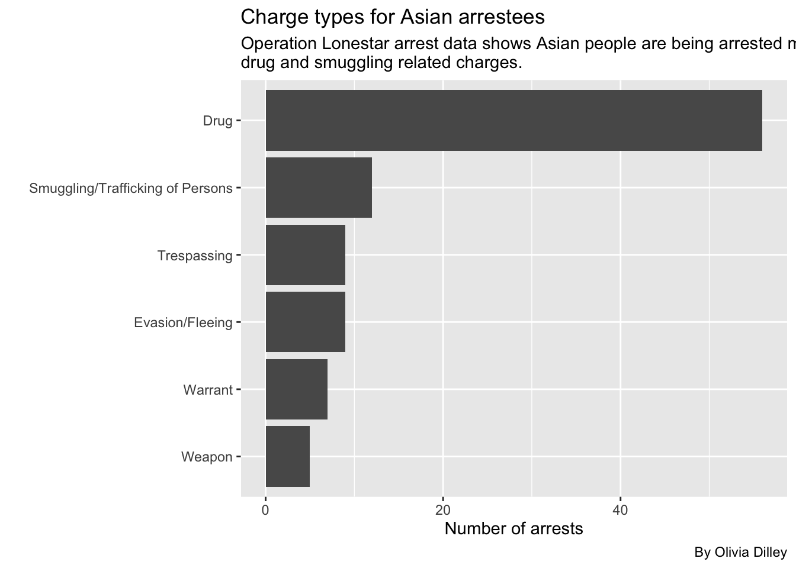
Breaking down the Black smuggling category by county to test Lauren’s theory
Let’s break down the smuggling category by county for Black offenders to see where they are most commonly being arrested (not where they are from necessarily).
b_smuggling <- cat_ols |>
group_by(arrest_county, arrest_state, person_race_abbr, charge_cat) |>
filter(person_race_abbr == "B", charge_cat == "Smuggling/Trafficking of Persons") |>
summarise(appearances = n()) |>
arrange(desc(appearances))`summarise()` has grouped output by 'arrest_county', 'arrest_state',
'person_race_abbr'. You can override using the `.groups` argument.b_smuggling# A tibble: 38 × 5
# Groups: arrest_county, arrest_state, person_race_abbr [38]
arrest_county arrest_state person_race_abbr charge_cat appearances
<chr> <chr> <chr> <chr> <int>
1 Kinney TEXAS B Smuggling/Traffickin… 448
2 Val Verde TEXAS B Smuggling/Traffickin… 130
3 Maverick TEXAS B Smuggling/Traffickin… 109
4 Uvalde TEXAS B Smuggling/Traffickin… 94
5 Zavala TEXAS B Smuggling/Traffickin… 73
6 Edwards TEXAS B Smuggling/Traffickin… 66
7 Dimmit TEXAS B Smuggling/Traffickin… 48
8 Sutton TEXAS B Smuggling/Traffickin… 34
9 El Paso TEXAS B Smuggling/Traffickin… 23
10 La Salle TEXAS B Smuggling/Traffickin… 22
# ℹ 28 more rowskinney_b_smuggling <- cat_ols |>
group_by(arrest_county, arrest_state, person_race_abbr, charge_cat) |>
filter(arrest_county == "Kinney", person_race_abbr == "B", charge_cat == "Smuggling/Trafficking of Persons")
kinney_b_smuggling# A tibble: 448 × 27
# Groups: arrest_county, arrest_state, person_race_abbr, charge_cat [1]
primary_key charge charge_count ethnicity charge_date person_age
<chr> <chr> <dbl> <chr> <date> <dbl>
1 TX202356 Smuggling of Perso… 5 N 2023-01-21 30
2 TX202356 Smuggling of Perso… 2 N 2023-01-21 30
3 TX2023105 Smuggling of Perso… 3 N 2023-02-06 27
4 TX2023288 Smuggling of Perso… 1 N 2023-02-24 21
5 TX2023289 Smuggling of Perso… 1 N 2023-02-24 22
6 TX2023291 Smuggling of Perso… 3 N 2023-02-24 20
7 TX2023355 Smuggling of Perso… 4 N 2023-02-25 NA
8 TX2023437 Smuggling of Perso… 5 N 2023-02-14 42
9 TX2023479 Smuggling of Perso… 5 N 2023-03-04 NA
10 TX2023916 Smuggling of Perso… 7 N 2023-03-18 38
# ℹ 438 more rows
# ℹ 21 more variables: person_first_name <chr>, person_second_name <chr>,
# person_third_name <chr>, person_last_name <chr>, officer_id <dbl>,
# arrest_county <chr>, code <chr>, severity_code <chr>,
# severity_code_clean <chr>, person_race_abbr <chr>,
# person_gender_abbr <chr>, arrest_state <chr>, arrest_division <chr>,
# arrest_id <dbl>, arrest_urn <chr>, arresting_officer <chr>, …ggplot(kinney_b_smuggling, aes(x=charge_date, y=charge_count)) +
geom_line() +
labs(
title = "Black smuggling arrests over time in Kinney County",
subtitle = str_wrap("Operation Lonestar arrest data shows Black people are being arrested in Kinney for smuggling charges 4x as much as in any other county in OLS parameters. This breakdown shows those arrests over time."),
caption = "By Olivia Dilley",
x = "Date",
y = "Charges"
)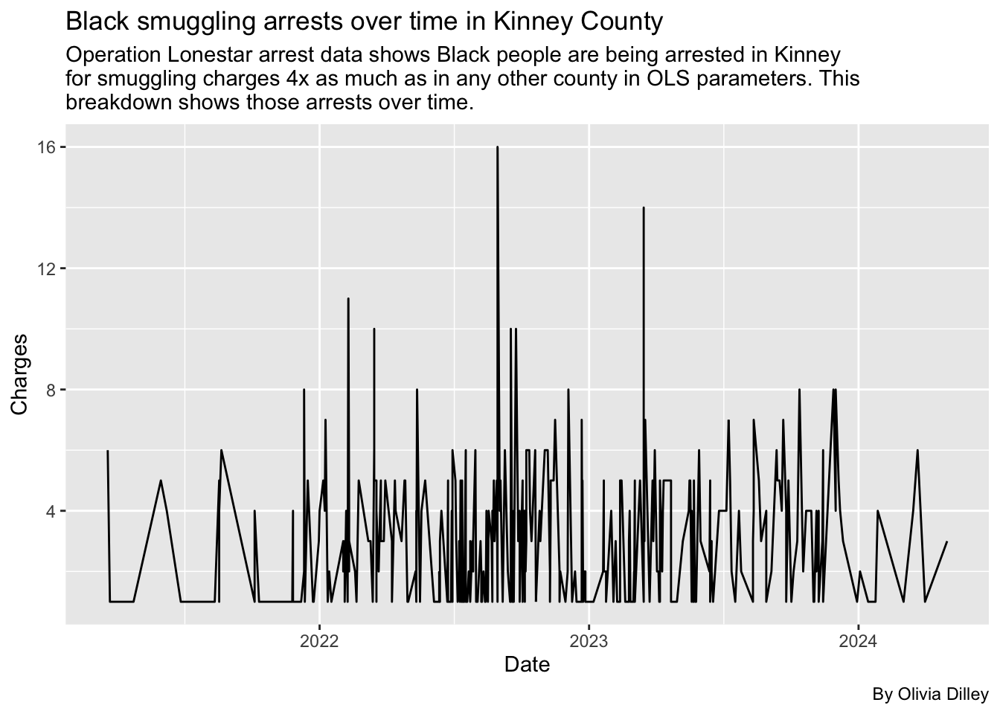
Let’s grab this real quick so we can make a chart in Tableau
write_csv(b_smuggling, "/Users/oliviadilley/b_smuggling.csv")Now for the graph of Black arrests by county.
ggplot(b_smuggling, aes(x = reorder(arrest_county, appearances), y = appearances)) +
geom_bar(stat = "identity") +
coord_flip() +
labs(
title = "Black smuggling arrests by county",
subtitle = str_wrap("Operation Lonestar arrest data shows Black people are being arrested for smuggling charges in these counties."),
caption = "By Olivia Dilley",
x = "",
y = "Number of arrests"
)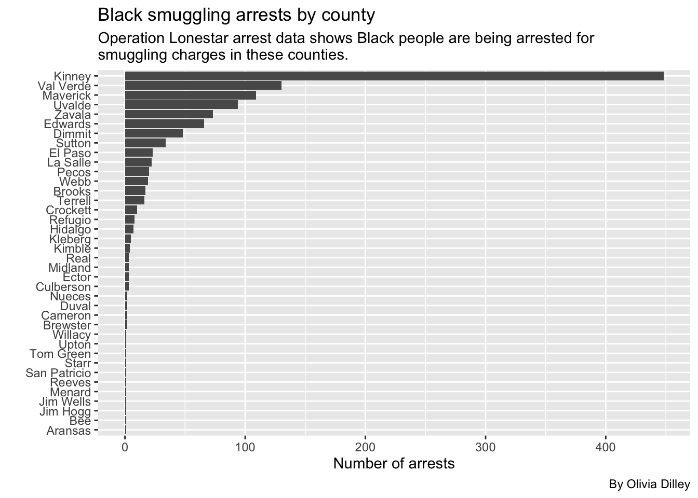
Now let’s see the White breakdown.
w_smuggling <- cat_ols |>
group_by(arrest_county, arrest_state, person_race_abbr, charge_cat) |>
filter(person_race_abbr == "W", charge_cat == "Smuggling/Trafficking of Persons") |>
summarise(appearances = n()) |>
arrange(desc(appearances))`summarise()` has grouped output by 'arrest_county', 'arrest_state',
'person_race_abbr'. You can override using the `.groups` argument.w_smuggling# A tibble: 47 × 5
# Groups: arrest_county, arrest_state, person_race_abbr [47]
arrest_county arrest_state person_race_abbr charge_cat appearances
<chr> <chr> <chr> <chr> <int>
1 Kinney TEXAS W Smuggling/Traffickin… 305
2 El Paso TEXAS W Smuggling/Traffickin… 230
3 Hidalgo TEXAS W Smuggling/Traffickin… 113
4 Val Verde TEXAS W Smuggling/Traffickin… 104
5 Maverick TEXAS W Smuggling/Traffickin… 87
6 Uvalde TEXAS W Smuggling/Traffickin… 79
7 Zavala TEXAS W Smuggling/Traffickin… 70
8 Edwards TEXAS W Smuggling/Traffickin… 50
9 Webb TEXAS W Smuggling/Traffickin… 45
10 Dimmit TEXAS W Smuggling/Traffickin… 43
# ℹ 37 more rowsWe’ll make a plot.
ggplot(w_smuggling, aes(x = reorder(arrest_county, appearances), y = appearances)) +
geom_bar(stat = "identity") +
coord_flip() +
labs(
title = "White smuggling arrests by county",
subtitle = str_wrap("Operation Lonestar arrest data shows white people are being arrested for smuggling charges in these counties."),
caption = "By Olivia Dilley",
x = "",
y = "Number of arrests"
)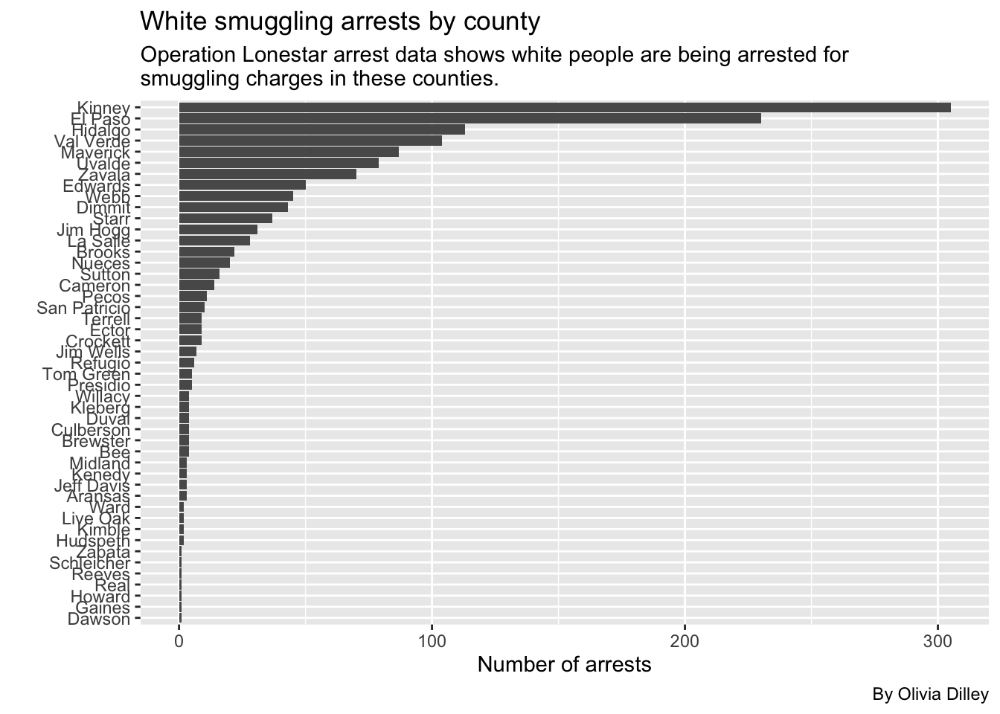
Now let’s see the Hispanic breakdown.
h_smuggling <- cat_ols |>
group_by(arrest_county, arrest_state, person_race_abbr, charge_cat) |>
filter(person_race_abbr == "H", charge_cat == "Smuggling/Trafficking of Persons") |>
summarise(appearances = n()) |>
arrange(desc(appearances))`summarise()` has grouped output by 'arrest_county', 'arrest_state',
'person_race_abbr'. You can override using the `.groups` argument.h_smuggling# A tibble: 46 × 5
# Groups: arrest_county, arrest_state, person_race_abbr [46]
arrest_county arrest_state person_race_abbr charge_cat appearances
<chr> <chr> <chr> <chr> <int>
1 Kinney TEXAS H Smuggling/Traffickin… 1347
2 El Paso TEXAS H Smuggling/Traffickin… 1230
3 Hidalgo TEXAS H Smuggling/Traffickin… 884
4 Webb TEXAS H Smuggling/Traffickin… 555
5 Val Verde TEXAS H Smuggling/Traffickin… 492
6 Uvalde TEXAS H Smuggling/Traffickin… 486
7 Maverick TEXAS H Smuggling/Traffickin… 475
8 Zavala TEXAS H Smuggling/Traffickin… 399
9 Starr TEXAS H Smuggling/Traffickin… 267
10 Edwards TEXAS H Smuggling/Traffickin… 251
# ℹ 36 more rowsNow we’ll make a plot.
ggplot(h_smuggling, aes(x = reorder(arrest_county, appearances), y = appearances)) +
geom_bar(stat = "identity") +
coord_flip() +
labs(
title = "Hispanic smuggling arrests by county",
subtitle = str_wrap("Operation Lonestar arrest data shows Hispanic people are being arrested for smuggling charges in these counties."),
caption = "By Olivia Dilley",
x = "",
y = "Number of arrests"
)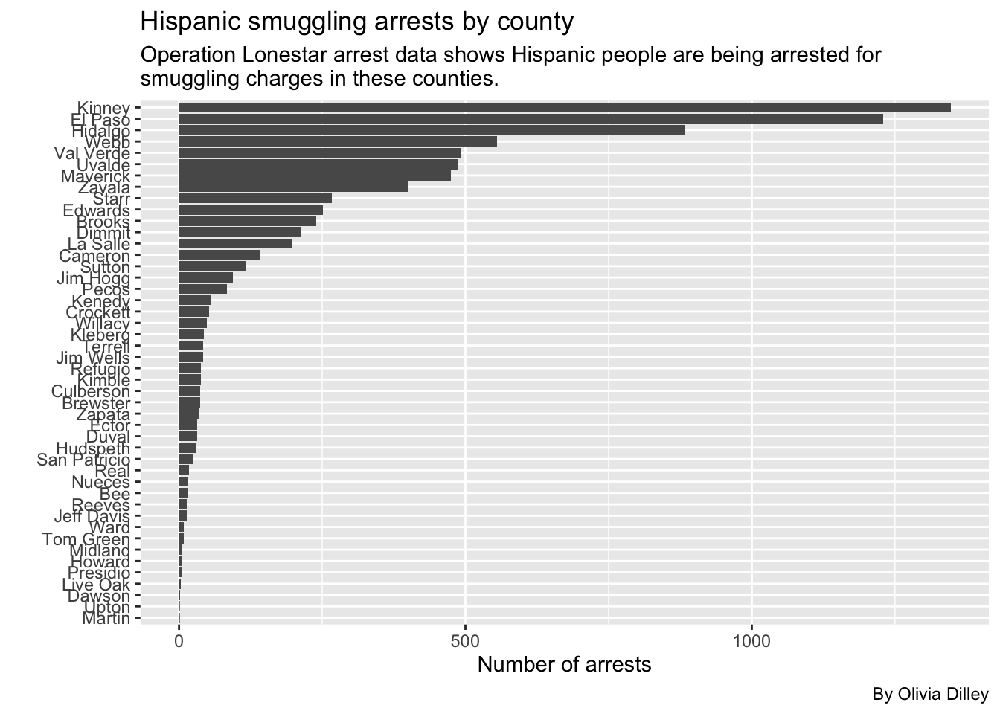
Let’s make some tabyls to compare percentages
County and race tabyl
olsdata |>
tabyl(arrest_county, person_race_abbr) |>
adorn_percentages() |>
adorn_pct_formatting() |>
adorn_ns() arrest_county A B H I U
Andrews 0.0% (0) 12.4% (23) 56.5% (105) 0.0% (0) 0.0% (0)
Aransas 0.0% (0) 4.0% (14) 38.9% (136) 0.0% (0) 0.0% (0)
Bee 0.0% (0) 7.6% (30) 68.6% (271) 0.0% (0) 0.0% (0)
Borden 0.0% (0) 20.0% (1) 40.0% (2) 0.0% (0) 0.0% (0)
Brewster 0.6% (2) 12.3% (43) 45.3% (158) 0.0% (0) 0.0% (0)
Brooks 0.3% (3) 6.3% (62) 81.6% (806) 0.0% (0) 0.2% (2)
Cameron 0.1% (2) 1.4% (46) 84.9% (2,756) 0.0% (0) 0.0% (0)
Coke 0.0% (0) 31.0% (13) 42.9% (18) 0.0% (0) 0.0% (0)
Concho 1.8% (1) 14.0% (8) 33.3% (19) 0.0% (0) 0.0% (0)
Crane 0.0% (0) 23.5% (4) 64.7% (11) 0.0% (0) 0.0% (0)
Crockett 0.0% (0) 19.8% (68) 58.0% (199) 0.0% (0) 0.0% (0)
Culberson 0.8% (3) 19.6% (72) 54.1% (199) 0.3% (1) 0.8% (3)
Dawson 0.8% (1) 14.6% (19) 69.2% (90) 0.0% (0) 0.0% (0)
Dimmit 0.0% (0) 13.2% (116) 68.9% (604) 0.0% (0) 0.0% (0)
Duval 0.0% (0) 2.9% (6) 76.2% (157) 0.0% (0) 0.0% (0)
Ector 0.3% (5) 10.0% (193) 59.6% (1,150) 0.1% (1) 0.0% (0)
Edwards 0.2% (1) 18.4% (105) 63.5% (362) 0.0% (0) 0.0% (0)
El Paso 0.0% (1) 3.3% (131) 74.0% (2,942) 0.0% (0) 0.0% (1)
Gaines 0.0% (0) 11.5% (6) 53.8% (28) 0.0% (0) 0.0% (0)
Glasscock 0.0% (0) 25.0% (1) 75.0% (3) 0.0% (0) 0.0% (0)
Hidalgo 0.0% (3) 0.9% (57) 82.9% (5,334) 0.0% (0) 0.0% (0)
Howard 0.0% (0) 23.1% (42) 46.7% (85) 0.0% (0) 0.0% (0)
Hudspeth 0.0% (0) 19.1% (70) 51.6% (189) 0.0% (0) 0.0% (0)
Irion 0.0% (0) 0.0% (0) 40.0% (2) 0.0% (0) 0.0% (0)
Jeff Davis 0.0% (0) 21.3% (19) 58.4% (52) 0.0% (0) 0.0% (0)
Jim Hogg 0.0% (0) 0.7% (7) 79.2% (805) 0.0% (0) 0.0% (0)
Jim Wells 0.2% (1) 3.0% (16) 82.7% (444) 0.0% (0) 0.0% (0)
Kenedy 0.8% (2) 11.0% (28) 71.8% (183) 0.0% (0) 0.0% (0)
Kimble 0.0% (0) 24.2% (62) 51.2% (131) 0.0% (0) 0.0% (0)
Kinney 0.1% (5) 9.2% (663) 82.8% (5,981) 0.0% (0) 0.0% (2)
Kleberg 0.4% (3) 14.0% (97) 73.4% (510) 0.0% (0) 0.0% (0)
La Salle 0.3% (2) 10.3% (81) 75.9% (596) 0.0% (0) 0.0% (0)
Live Oak 0.0% (0) 10.7% (41) 64.7% (247) 0.0% (0) 0.0% (0)
Loving 0.0% (0) 0.0% (0) 25.0% (1) 0.0% (0) 0.0% (0)
Martin 0.0% (0) 34.5% (19) 45.5% (25) 0.0% (0) 0.0% (0)
Mason 0.0% (0) 12.0% (3) 44.0% (11) 0.0% (0) 0.0% (0)
Maverick 0.2% (15) 2.9% (216) 91.7% (6,836) 0.0% (0) 0.8% (57)
Mcculloch 0.0% (0) 13.7% (13) 24.2% (23) 0.0% (0) 0.0% (0)
McCulloch 2.2% (1) 22.2% (10) 28.9% (13) 0.0% (0) 0.0% (0)
Menard 0.0% (0) 36.4% (4) 36.4% (4) 0.0% (0) 0.0% (0)
Midland 0.3% (3) 18.4% (197) 53.6% (572) 0.0% (0) 0.0% (0)
Nueces 0.5% (5) 8.0% (81) 60.1% (608) 0.0% (0) 0.0% (0)
Pecos 0.2% (2) 22.3% (250) 54.1% (605) 0.0% (0) 0.0% (0)
Presidio 0.0% (0) 2.0% (2) 66.3% (65) 0.0% (0) 0.0% (0)
Reagan 0.0% (0) 8.3% (2) 50.0% (12) 0.0% (0) 0.0% (0)
Real 0.0% (0) 5.5% (3) 70.9% (39) 0.0% (0) 0.0% (0)
Reeves 0.0% (0) 18.8% (70) 56.8% (212) 0.0% (0) 0.0% (0)
Refugio 0.0% (0) 20.3% (52) 60.5% (155) 0.0% (0) 0.0% (0)
San Patricio 1.1% (14) 8.4% (107) 61.6% (789) 0.0% (0) 0.0% (0)
Schleicher 0.0% (0) 26.7% (4) 33.3% (5) 0.0% (0) 0.0% (0)
Starr 0.1% (2) 0.9% (21) 86.3% (2,015) 0.0% (0) 0.0% (0)
Sterling 0.0% (0) 14.3% (7) 71.4% (35) 0.0% (0) 0.0% (0)
Sutton 2.3% (8) 21.0% (73) 60.9% (212) 0.0% (0) 0.0% (0)
Terrell 0.0% (0) 20.1% (30) 67.8% (101) 0.0% (0) 0.0% (0)
Tom Green 0.8% (9) 15.6% (181) 42.2% (490) 0.0% (0) 0.0% (0)
Upton 0.0% (0) 20.0% (9) 48.9% (22) 0.0% (0) 0.0% (0)
Uvalde 0.0% (0) 9.2% (175) 71.7% (1,366) 0.0% (0) 0.0% (0)
Val Verde 0.0% (0) 11.9% (219) 75.1% (1,382) 0.0% (0) 0.0% (0)
Ward 0.0% (0) 16.7% (34) 57.8% (118) 0.0% (0) 0.0% (0)
Webb 0.1% (3) 1.6% (54) 86.2% (2,918) 0.0% (0) 0.0% (0)
Willacy 0.0% (0) 10.8% (41) 71.4% (270) 0.0% (0) 0.0% (0)
Winkler 0.0% (0) 18.1% (13) 48.6% (35) 0.0% (0) 1.4% (1)
Zapata 0.0% (0) 0.8% (2) 91.1% (224) 0.0% (0) 0.0% (0)
Zavala 0.1% (1) 12.5% (151) 71.3% (864) 0.0% (0) 0.1% (1)
W NA_
31.2% (58) 0.0% (0)
56.6% (198) 0.6% (2)
23.8% (94) 0.0% (0)
40.0% (2) 0.0% (0)
38.7% (135) 3.2% (11)
10.0% (99) 1.6% (16)
11.9% (386) 1.7% (56)
26.2% (11) 0.0% (0)
49.1% (28) 1.8% (1)
11.8% (2) 0.0% (0)
19.8% (68) 2.3% (8)
24.5% (90) 0.0% (0)
14.6% (19) 0.8% (1)
16.3% (143) 1.5% (13)
20.4% (42) 0.5% (1)
29.1% (562) 1.0% (20)
17.2% (98) 0.7% (4)
18.2% (723) 4.4% (175)
34.6% (18) 0.0% (0)
0.0% (0) 0.0% (0)
14.7% (947) 1.4% (92)
28.0% (51) 2.2% (4)
26.8% (98) 2.5% (9)
40.0% (2) 20.0% (1)
20.2% (18) 0.0% (0)
19.3% (196) 0.8% (8)
12.7% (68) 1.5% (8)
15.7% (40) 0.8% (2)
23.0% (59) 1.6% (4)
7.3% (527) 0.7% (48)
11.7% (81) 0.6% (4)
11.5% (90) 2.0% (16)
23.3% (89) 1.3% (5)
75.0% (3) 0.0% (0)
20.0% (11) 0.0% (0)
44.0% (11) 0.0% (0)
3.8% (287) 0.6% (47)
61.1% (58) 1.1% (1)
46.7% (21) 0.0% (0)
27.3% (3) 0.0% (0)
26.3% (281) 1.4% (15)
27.6% (279) 3.8% (38)
22.3% (250) 1.1% (12)
28.6% (28) 3.1% (3)
29.2% (7) 12.5% (3)
23.6% (13) 0.0% (0)
21.2% (79) 3.2% (12)
16.8% (43) 2.3% (6)
28.4% (364) 0.5% (7)
40.0% (6) 0.0% (0)
11.5% (268) 1.2% (29)
14.3% (7) 0.0% (0)
15.2% (53) 0.6% (2)
12.1% (18) 0.0% (0)
40.5% (470) 0.9% (11)
31.1% (14) 0.0% (0)
17.6% (336) 1.4% (27)
12.1% (223) 0.8% (15)
24.0% (49) 1.5% (3)
9.1% (307) 3.1% (104)
17.2% (65) 0.5% (2)
31.9% (23) 0.0% (0)
8.1% (20) 0.0% (0)
15.1% (183) 0.9% (11)Overall % of race arrests tabyl
olsdata |>
tabyl(person_race_abbr) |>
adorn_pct_formatting() |>
tibble()# A tibble: 7 × 4
person_race_abbr n percent valid_percent
<chr> <dbl> <chr> <chr>
1 A 98 0.2% 0.2%
2 B 4187 7.1% 7.2%
3 H 44602 76.1% 77.2%
4 I 2 0.0% 0.0%
5 U 67 0.1% 0.1%
6 W 8822 15.0% 15.3%
7 <NA> 857 1.5% - Smuggling arrests by race and county %
*** THIS DOESN’T WORK *** It should add up to 100% down each column but doesn’t.
cat_ols |>
filter(charge_cat == "Smuggling/Trafficking of Persons") |>
tabyl(person_race_abbr, arrest_county) |>
adorn_percentages() |>
adorn_pct_formatting() |>
tibble()# A tibble: 6 × 52
person_race_abbr Aransas Bee Brewster Brooks Cameron Crockett Culberson
<chr> <chr> <chr> <chr> <chr> <chr> <chr> <chr>
1 A 0.0% 0.0% 0.0% 0.0% 0.0% 0.0% 0.0%
2 B 0.1% 0.1% 0.2% 1.4% 0.2% 0.8% 0.3%
3 H 0.0% 0.2% 0.5% 2.9% 1.7% 0.6% 0.5%
4 U 0.0% 0.0% 0.0% 0.0% 0.0% 0.0% 0.0%
5 W 0.2% 0.3% 0.3% 1.6% 1.0% 0.6% 0.3%
6 <NA> 0.0% 0.0% 0.0% 4.0% 1.7% 0.6% 0.0%
# ℹ 44 more variables: Dawson <chr>, Dimmit <chr>, Duval <chr>, Ector <chr>,
# Edwards <chr>, `El Paso` <chr>, Gaines <chr>, Hidalgo <chr>, Howard <chr>,
# Hudspeth <chr>, `Jeff Davis` <chr>, `Jim Hogg` <chr>, `Jim Wells` <chr>,
# Kenedy <chr>, Kimble <chr>, Kinney <chr>, Kleberg <chr>, `La Salle` <chr>,
# `Live Oak` <chr>, Martin <chr>, Maverick <chr>, Menard <chr>,
# Midland <chr>, Nueces <chr>, Pecos <chr>, Presidio <chr>, Reagan <chr>,
# Real <chr>, Reeves <chr>, Refugio <chr>, `San Patricio` <chr>, …Looking into specific officers
Let’s see if any officers stick out as arresting more Black people than other races. We’ll filter their arrests to be more than 100 so we can ensure that there are a large # of arrests by a specific officer in general. (Otherwise findings wouldn’t be very significant.)
olsdata |>
tabyl(arresting_officer, person_race_abbr) |>
adorn_totals("col", name = "col_total") |>
adorn_totals("row") |>
tibble() |>
arrange(desc(col_total)) |>
filter(col_total > 100)# A tibble: 63 × 9
arresting_officer A B H I U W NA_ col_total
<chr> <dbl> <dbl> <dbl> <dbl> <dbl> <dbl> <dbl> <dbl>
1 Total 98 4187 44602 2 67 8822 857 58635
2 <NA> 98 1034 14302 2 67 1753 0 17256
3 Derrick Hinojosa 0 2 296 0 0 42 0 340
4 Jose Mendoza 0 2 269 0 0 45 6 322
5 David Poland 0 32 79 0 0 143 34 288
6 Juan Sauceda 0 3 210 0 0 26 3 242
7 Jose Delafuente 0 1 217 0 0 17 6 241
8 Arnold Rodriguez 0 0 197 0 0 11 7 215
9 Sarah Oranday 0 28 159 0 0 25 0 212
10 Alejandro Morante 0 28 117 0 0 51 1 197
# ℹ 53 more rows # adorn_percentages() |>
# adorn_pct_formatting() |>
# adorn_ns() |>